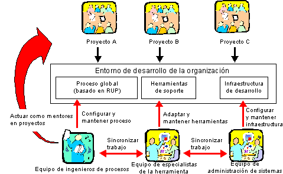

| Concepto: Entorno de desarrollo |
 |
|
| Elementos relacionados |
|---|
Entorno de desarrollo de un proyectoEl entorno de desarrollo de un proyecto de desarrollo de software es el término que cubre todo lo que necesita el proyecto para desarrollar y desplegar el sistema, como las herramientas, directrices, procesos, plantillas e infraestructura. Todo ello está representado por productos de trabajo en Rational Unified Process que se lista a continuación:
Entorno de desarrollo empresarialSuele haber muchas similitudes entre proyectos distintos en una empresa de desarrollo. Los proyectos utilizan las mismas herramientas de una forma similar. El proceso es similar entre los distintos proyectos y es posible que algunas de las directrices sean idénticas. Por lo tanto, una empresa de desarrollo puede beneficiarse si cuenta con un equipo para desarrollar y mantener un entorno de desarrollo empresarial que cuente con un mismo proceso para toda la empresa, una forma de utilizar las herramientas y una misma infraestructura. Este equipo de entorno debe contar con ingenieros de proceso que se encarguen de desarrollar y mantener el proceso para toda la empresa. Al tener un proceso para toda la empresa, los distintos proyectos de desarrollo de software tienen que realizar una menor personalización del proceso porque mucho de ello ya se habrá hecho para el proceso para toda la empresa. Los ingenieros de proceso hacen de guías para los proyectos individuales de desarrollo de software. El equipo de entorno también puede tener un especialista en herramientas que configure y mantenga las herramientas de soporte. El especialista en herramientas de este equipo puede ofrecer ayuda a los proyectos individuales de desarrollo de software para la configuración de las herramientas. Los administradores del sistema también pueden formar parte del equipo de entorno.  Los ingenieros de proceso, los especialistas en herramientas y los administradores del sistema desarrollan un entorno de desarrollo para la empresa. Entornos de prueba
En la mayor parte de los casos, los requisitos de los entornos de prueba son más específicos, detallados y rigurosos
que el entorno de desarrollo básico. Los entornos de prueba suelen ser técnicamente menos sofisticados que el entorno
de desarrollo (hay menos requisitos de hardware). A menudo también hay varios entornos que necesitan dar soporte a las
actividades de prueba de software, en los que la configuración del hardware y del software serán distintos, pues
representan distintas restricciones de los interesados. |
© Copyright IBM Corp. 1987, 2006. Reservados todos los derechos. |